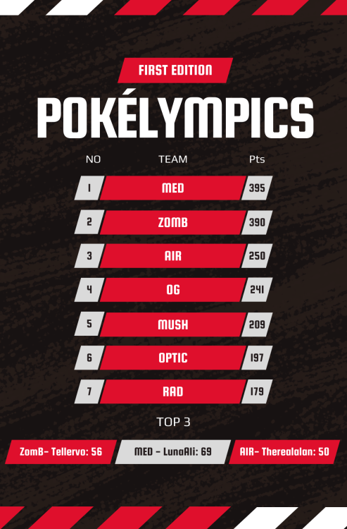
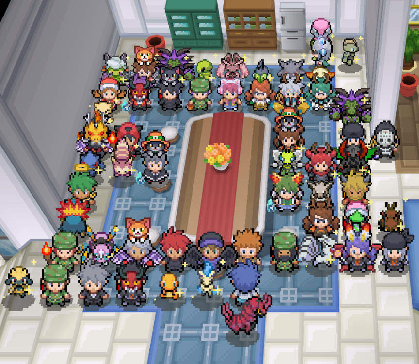

Tres amigos, que se conocían desde hacía mucho tiempo y que siempre jugaban juntos, pero a la vez por separado, un día dijeron: ¿y si hacemos un equipo donde podamos charlar y estar juntos?
Así, el 7 de febrero de 2023 nació Team MediChad, como respuesta a la pregunta del párrafo anterior, con el simple objetivo de compartir buenos momentos juntos y Buscando Shinys, pero en poco tiempo fueron llegando nuevos amigos y el equipo comenzó a crecer. . Se convirtió en un equipo con grandes aspiraciones, como completar la ShinyDex.
En el mes de Agosto del 2024, el equipo rompió su record de mayor cantidad de shinys en el mes (135 shinys)
Después de 3 semanas de arduo trabajo, ¡conseguiremos el primer puesto en las Pokelympics! Tenemos momentos felices y otros tensos. Estamos felices porque logramos encontrar muchos shinys y hacer nuevos amigos.
Estamos increíblemente agradecidos con quienes apoyaron a MeD con su esfuerzo, tiempo y dedicación, y también con quienes hicieron posible este evento.
 